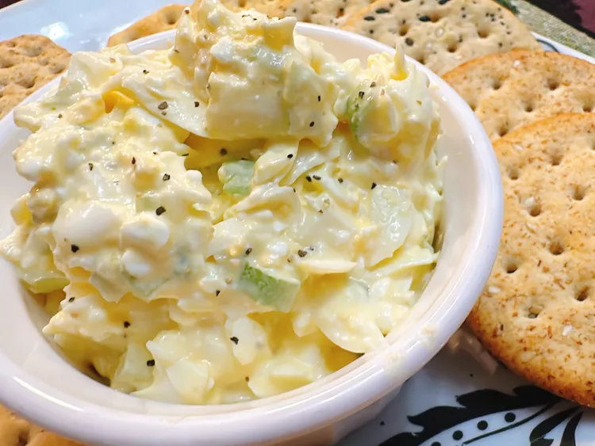

Home
High Protein Egg Salad

Description
For this creamy high protein egg salad, the dressing is made from blended Greek yogurt, cottage cheese, and mayonnaise. It’s great for increasing protein, without sacrificing flavor. Serve with crackers or as a sandwich spread.
Ingredients
- 6 large eggs
- 1/2 cup finely chopped celery
- 1 tablespoon minced onion
- 1/2 cup cottage cheese
- 2 tablespoons plain Greek yogurt
- 2 tablespoons mayonnaise
- salt and freshly ground black pepper to taste
Steps
- Place eggs in a saucepan and add enough water to cover them by about 1 inch.
- Bring to a boil, then turn off heat and cover. Let stand for 10 to 12 minutes, then transfer eggs to an ice water bath until cooled, 5 to 10 minutes. Peel eggs and set aside.
- Add cottage cheese, yogurt, and mayonnaise to a food processor; blend to combine. Add the hard boiled eggs, pulse to incorporate the eggs. Transfer the mixture to a bowl. Stir in the minced celery, and onion. Season with salt and pepper.